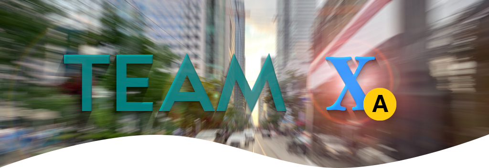

The goal for UMTAS is, and always has been, to find a way to evaluate and provide feedback on the accessibility and universal design of transit infrastructure. To simplify things, the project focuses on subway stations exclusively. Many people struggle while using subway stations, due to many factors ranging from poor lighting to slippery staircases. Using the seven universal design principles and the CSA Group’s universal design standards document, the group has been working for the past five months to develop a solution to this problem. The solution that the group has decided on is a system that could be used to develop a checklist that includes all items that an evaluator would like to assess, an evaluation procedure for evaluating the checklist items in the station, a set of appropriate feedback corresponding to each of the checklist items, and a gathering of results to a final evaluation.
There is currently no structure put in place to assess the validity, effectiveness, and impact of the current built environment on people at transit hubs. This specific product is new because we all know that there are standards that exist from organizations such as the Canadian Standards Association, however they are difficult to use. There is no system designed specifically for helping evaluators of these standards in public transit environments. The system that Team X\(_\text{a}\) has created strives to give the evaluator a set way to think when performing the evaluation to ensure that no step is missed. It will allow the user to methodically, using the black-box procedure, qualitatively evaluate a subway station. This is useful because this not only provides the methodology, but it standardizes how to actually use the standards that exist. Otherwise, anyone can just walk into a subway station and take the standards and check yes or no. However, this brings forth a high level of subjectivity. Our Team has made it a focus of the project to ensure that subjectivity is reduced, and objectivity is brought forth wherever possible. Additionally, this is useful because the CSA is able to test whether their standards actually are worth keeping or if they are out of date and redundant. This evaluation tool, in essence, gives the standards created by the CSA a practical purpose.
Looking ahead, Team Xₐ hopes that this system will be used by transit agencies and the CSA Group to improve the effectiveness of their standards evaluations. This will further grow into being able to assess different areas of transit e.g. evaluating the inside of a streetcar, bus stops, etc. Finally, the long-term goal is to be able to improve the lives of the public by making travel easier.
UMTAS is currently available as its instruction set in Instructions. These are summarized by the YouTube series UMTAS.